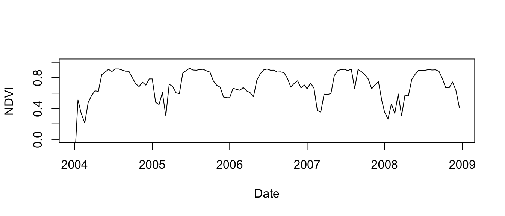
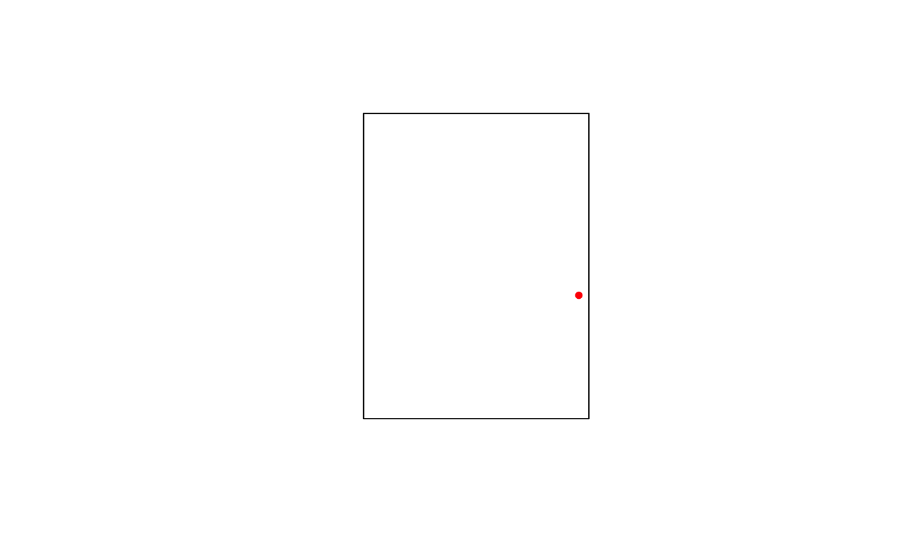

vignettes/modistools-vignette.Rmd
modistools-vignette.RmdThe MODISTools package has as goal to facilitate the interface between R and the MODIS Land Product Subset API at the Oak Ridge National Laboratory DAAC. This programmatic interface to the ‘MODIS Land Products Subsets’ web services allows for easy downloads of ‘MODIS’ time series directly to your R workspace or your computer. Below an example is provided on how to download a MODIS time series as well as list ancillary data.
In order to assess which products are available, which product bands are provided and which temporal range is covered one has to list these ancillary data. All these options can be queried using the mt_*() functions.
To list all available products use the mt_products() function.
products <- mt_products()
head(products)
#> product
#> 1 Daymet
#> 2 MCD12Q1
#> 3 MCD12Q2
#> 4 MCD15A2H
#> 5 MCD15A3H
#> 6 MCD19A3
#> description
#> 1 Daily Surface Weather Data (Daymet) on a 1-km Grid for North America, Version 3
#> 2 MODIS/Terra+Aqua Land Cover Type (LC) Yearly L3 Global 500 m SIN Grid
#> 3 MODIS/Terra+Aqua Land Cover Dynamics (LCD) Yearly L3 Global 500 m SIN Grid
#> 4 MODIS/Terra+Aqua Leaf Area Index/FPAR (LAI/FPAR) 8-Day L4 Global 500 m SIN Grid
#> 5 MODIS/Terra+Aqua Leaf Area Index/FPAR (LAI/FPAR) 4-Day L4 Global 500 m SIN Grid
#> 6 MODIS/Terra+Aqua BRDF Model Parameters (MAIAC) 8-Day L3 Global 1 km SIN Grid
#> frequency resolution_meters
#> 1 1 day 1000
#> 2 1 year 500
#> 3 1 year 500
#> 4 8 day 500
#> 5 4 day 500
#> 6 8 day 1000To list all available bands for a given product use the mt_bands() function.
bands <- mt_bands(product = "MOD13Q1")
head(bands)
#> band description
#> 1 250m_16_days_VI_Quality VI quality indicators
#> 2 250m_16_days_blue_reflectance Surface Reflectance Band 3
#> 3 250m_16_days_pixel_reliability Quality reliability of VI pixel
#> 4 250m_16_days_NIR_reflectance Surface Reflectance Band 2
#> 5 250m_16_days_MIR_reflectance Surface Reflectance Band 7
#> 6 250m_16_days_NDVI 16 day NDVI average
#> units valid_range fill_value
#> 1 bit field 0 to 65534 -1
#> 2 reflectance 0 to 10000 -1000
#> 3 rank 0 to 3 -1
#> 4 reflectance 0 to 10000 -1000
#> 5 reflectance 0 to 10000 -1000
#> 6 NDVI ratio - No units -2000 to 10000 -3000To list all available dates (temporal coverage) for a given product and location use the mt_dates() function.
Once you decide on which data to download using the above functions you can use these parameters to download a time series using the mt_subset() function. The below query downloads MOD11A2 based daytime lands surface temperatures. The location is named ‘testsite’ and only covers the first six months of 2004. The output is saved to a variable called subset in the R workspace (as defined by the parameter internal = TRUE, when set to FALSE the data is written to file).
# download data
subset <- mt_subset(product = "MOD13Q1",
lat = 42.534171,
lon = -72.179003,
band = "250m_16_days_NDVI",
start = "2004-01-01",
end = "2008-12-30",
km_lr = 0,
km_ab = 0,
site_name = "testsite",
internal = TRUE,
progress = FALSE)
head(subset)
#> xllcorner yllcorner cellsize nrows ncols band
#> 1.1 -5914186.84 4729496.17 231.656358264 1 1 250m_16_days_NDVI
#> 2.1 -5914186.84 4729496.17 231.656358264 1 1 250m_16_days_NDVI
#> 3.1 -5914186.84 4729496.17 231.656358264 1 1 250m_16_days_NDVI
#> 4.1 -5914186.84 4729496.17 231.656358264 1 1 250m_16_days_NDVI
#> 5.1 -5914186.84 4729496.17 231.656358264 1 1 250m_16_days_NDVI
#> 6.1 -5914186.84 4729496.17 231.656358264 1 1 250m_16_days_NDVI
#> units scale latitude longitude site product
#> 1.1 NDVI ratio - No units 0.0001 42.53417 -72.179 testsite MOD13Q1
#> 2.1 NDVI ratio - No units 0.0001 42.53417 -72.179 testsite MOD13Q1
#> 3.1 NDVI ratio - No units 0.0001 42.53417 -72.179 testsite MOD13Q1
#> 4.1 NDVI ratio - No units 0.0001 42.53417 -72.179 testsite MOD13Q1
#> 5.1 NDVI ratio - No units 0.0001 42.53417 -72.179 testsite MOD13Q1
#> 6.1 NDVI ratio - No units 0.0001 42.53417 -72.179 testsite MOD13Q1
#> start end complete modis_date calendar_date tile
#> 1.1 2004-01-01 2008-12-30 TRUE A2004001 2004-01-01 h12v04
#> 2.1 2004-01-01 2008-12-30 TRUE A2004017 2004-01-17 h12v04
#> 3.1 2004-01-01 2008-12-30 TRUE A2004033 2004-02-02 h12v04
#> 4.1 2004-01-01 2008-12-30 TRUE A2004049 2004-02-18 h12v04
#> 5.1 2004-01-01 2008-12-30 TRUE A2004065 2004-03-05 h12v04
#> 6.1 2004-01-01 2008-12-30 TRUE A2004081 2004-03-21 h12v04
#> proc_date pixel value
#> 1.1 2015154120947 1 -3000
#> 2.1 2015154121734 1 5108
#> 3.1 2015154122102 1 3286
#> 4.1 2015154125157 1 2115
#> 5.1 2015154125222 1 4775
#> 6.1 2015154125302 1 5687The output format is a tidy data frame, as shown above. When witten to a csv with the parameter internal = FALSE this will result in a flat file on disk.
Note that when a a region is defined using km_lr and km_ab multiple pixels might be returned. These are indexed using the pixel column in the data frame containing the time series data. The remote sensing values are listed in the value column. When no band is specified all bands of a given product are returned, be mindful of the fact that different bands might require different multipliers to represent their true values.
When a large selection of locations is needed you might benefit from using the batch download function mt_batch_subset(), which provides a wrapper around the mt_subset() function in order to speed up large download batches. This function has a similar syntax to mt_subset() but requires a data frame defining site names (site_name) and locations (lat / lon) (or a comma delimited file with the same structure) to specify a list of download locations.
# create data frame with a site_name, lat and lon column
# holding the respective names of sites and their location
df <- data.frame("site_name" = paste("test",1:2), stringsAsFactors = FALSE)
df$lat <- 40
df$lon <- -110
# an example batch download data frame
print(df)
#> site_name lat lon
#> 1 test 1 40 -110
#> 2 test 2 40 -110
# test batch download
subsets <- mt_batch_subset(df = df,
product = "MOD11A2",
band = "LST_Day_1km",
internal = TRUE,
start = "2004-01-01",
end = "2004-02-28",
out_dir = "~")
head(subsets)
#> xllcorner yllcorner cellsize nrows ncols band
#> 1.1.1 -9370036.39 4447802.08 926.625433055834 1 1 LST_Day_1km
#> 1.2.1 -9370036.39 4447802.08 926.625433055834 1 1 LST_Day_1km
#> 1.3.1 -9370036.39 4447802.08 926.625433055834 1 1 LST_Day_1km
#> 1.4.1 -9370036.39 4447802.08 926.625433055834 1 1 LST_Day_1km
#> 1.5.1 -9370036.39 4447802.08 926.625433055834 1 1 LST_Day_1km
#> 1.6.1 -9370036.39 4447802.08 926.625433055834 1 1 LST_Day_1km
#> units scale latitude longitude site product start end
#> 1.1.1 Kelvin 0.02 40 -110 test 1 MOD11A2 2004-01-01 2004-02-28
#> 1.2.1 Kelvin 0.02 40 -110 test 1 MOD11A2 2004-01-01 2004-02-28
#> 1.3.1 Kelvin 0.02 40 -110 test 1 MOD11A2 2004-01-01 2004-02-28
#> 1.4.1 Kelvin 0.02 40 -110 test 1 MOD11A2 2004-01-01 2004-02-28
#> 1.5.1 Kelvin 0.02 40 -110 test 1 MOD11A2 2004-01-01 2004-02-28
#> 1.6.1 Kelvin 0.02 40 -110 test 1 MOD11A2 2004-01-01 2004-02-28
#> complete modis_date calendar_date tile proc_date pixel value
#> 1.1.1 TRUE A2004001 2004-01-01 h09v05 2015212185706 1 13098
#> 1.2.1 TRUE A2004009 2004-01-09 h09v05 2015212201022 1 13062
#> 1.3.1 TRUE A2004017 2004-01-17 h09v05 2015212213103 1 13297
#> 1.4.1 TRUE A2004025 2004-01-25 h09v05 2015213005429 1 13323
#> 1.5.1 TRUE A2004033 2004-02-02 h09v05 2015213090158 1 13315
#> 1.6.1 TRUE A2004041 2004-02-10 h09v05 2015213165253 1 13227The above downloaded subset shows normalized difference vegetation index (NDVI), and an indicator of plant health, density and or complexity for the experimental Harvard Forest site. When plotted the yearly pattern of rising and falling NDVI values shows vegetation growth in spring, and senescence or leaf drop in fall. Values lower than ~0.4 are contaminated by snow or clouds.
# create a plot of the data - accounting for the multiplier (scale) component
date <- as.Date(subset$calendar_date)
temperature <- subset$value * as.double(subset$scale)
temperature[temperature == 0] <- NA
plot(date,
temperature,
xlab = "Date",
ylab = "NDVI",
ylim = c(0,1),
type = "l")
Corner coordinates of the pixel area extracted are provided, these can be used to calculate the coverage of the extracted area. Coordinates are provided in the original sinusoidal grid coordinates and first have to be transformed into latitude longitude (for convenience).
# convert the coordinates
lat_lon <- sin_to_ll(subset$xllcorner, subset$yllcorner)
# bind with the original dataframe
subset <- cbind(subset, lat_lon)
head(subset)
#> xllcorner yllcorner cellsize nrows ncols band
#> 1.1 -5914186.84 4729496.17 231.656358264 1 1 250m_16_days_NDVI
#> 2.1 -5914186.84 4729496.17 231.656358264 1 1 250m_16_days_NDVI
#> 3.1 -5914186.84 4729496.17 231.656358264 1 1 250m_16_days_NDVI
#> 4.1 -5914186.84 4729496.17 231.656358264 1 1 250m_16_days_NDVI
#> 5.1 -5914186.84 4729496.17 231.656358264 1 1 250m_16_days_NDVI
#> 6.1 -5914186.84 4729496.17 231.656358264 1 1 250m_16_days_NDVI
#> units scale latitude longitude site product
#> 1.1 NDVI ratio - No units 0.0001 42.53417 -72.179 testsite MOD13Q1
#> 2.1 NDVI ratio - No units 0.0001 42.53417 -72.179 testsite MOD13Q1
#> 3.1 NDVI ratio - No units 0.0001 42.53417 -72.179 testsite MOD13Q1
#> 4.1 NDVI ratio - No units 0.0001 42.53417 -72.179 testsite MOD13Q1
#> 5.1 NDVI ratio - No units 0.0001 42.53417 -72.179 testsite MOD13Q1
#> 6.1 NDVI ratio - No units 0.0001 42.53417 -72.179 testsite MOD13Q1
#> start end complete modis_date calendar_date tile
#> 1.1 2004-01-01 2008-12-30 TRUE A2004001 2004-01-01 h12v04
#> 2.1 2004-01-01 2008-12-30 TRUE A2004017 2004-01-17 h12v04
#> 3.1 2004-01-01 2008-12-30 TRUE A2004033 2004-02-02 h12v04
#> 4.1 2004-01-01 2008-12-30 TRUE A2004049 2004-02-18 h12v04
#> 5.1 2004-01-01 2008-12-30 TRUE A2004065 2004-03-05 h12v04
#> 6.1 2004-01-01 2008-12-30 TRUE A2004081 2004-03-21 h12v04
#> proc_date pixel value longitude_ll latitude_ll
#> 1.1 2015154120947 1 -3000 -72.17891 42.53333
#> 2.1 2015154121734 1 5108 -72.17891 42.53333
#> 3.1 2015154122102 1 3286 -72.17891 42.53333
#> 4.1 2015154125157 1 2115 -72.17891 42.53333
#> 5.1 2015154125222 1 4775 -72.17891 42.53333
#> 6.1 2015154125302 1 5687 -72.17891 42.53333Together with meta-data regarding cell size, number of columns and rows the bounding box of the extracted data can be calculated.
# convert to bounding box
bb <- apply(subset, 1, function(x){
ll_to_bb(lon = x['longitude_ll'],
lat = x['latitude_ll'],
cell_size = x['cellsize'],
nrows = x['nrows'],
ncols = x['ncols'])
})
# plot one bounding box
plot(bb[[1]])
# add the location of the queried coordinate within the polygon
points(subset$longitude[1],
subset$latitude[1],
pch = 20,
col = "red")